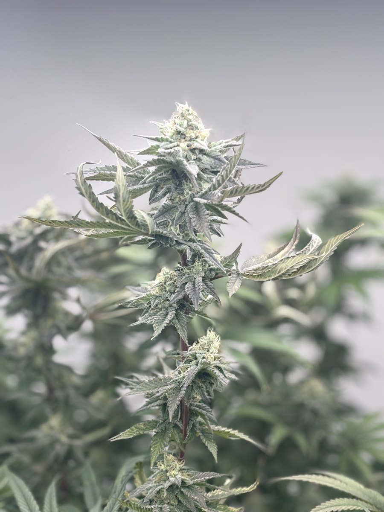
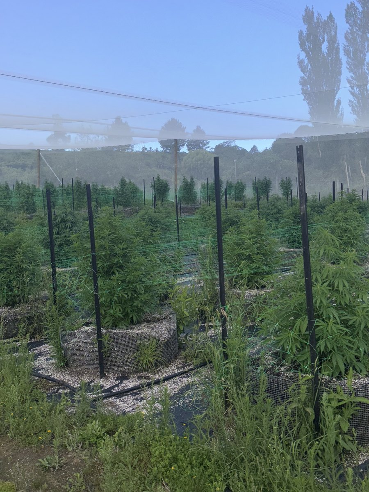

01
Indoor
PrecisionControlled environment, genetic refinement and premium flower.
This website is intended for healthcare professionals, licensed pharmacists, industry partners, and institutional stakeholders. It is not intended for patients or consumers.
Māori owned medicinal cannabis cultivation from Hawke's Bay. Licensed grower of premium medicinal flower available exclusively through licensed prescribers and qualified partners.
Aho is the thread that connects us to our whenua, to those who came before us, and to the generations still to come.
That connection sits at the heart of Aho Farms.

We bring together more than 21 years of combined California cultivation experience with a distinctly Aotearoa approach to growing medicinal cannabis, bringing world class knowledge home and applying it on Māori land.
We are Māori owned and built on Māori whenua, creating an industry that connects international cultivation expertise with our responsibility to the land, our people and the generations that will follow.
Across two cultivation sites in Hawke’s Bay, New Zealand, we grow across three distinct environments: indoor, greenhouse and outdoor. This allows us to match genetics with the environment in which they perform best, while creating a diverse and resilient cultivation platform.
Our outdoor and greenhouse crops harness Hawke’s Bay’s long summer days, abundant natural sunlight and intense UV exposure. Indoors, precisely controlled environments allow us to refine genetics, maintain consistency and cultivate premium flower to exacting standards.
Behind every plant is a commitment to quality, transparency and traceability. From propagation and cultivation through to harvest, drying and curing, each stage is recorded, creating a complete history of every batch we produce.
For us, growing medicinal cannabis is only part of the story.


Controlled environment, genetic refinement and premium flower.

Natural sunlight combined with environmental control.

Hawke's Bay sunlight, natural UV exposure and full season cultivation.
Three environments. One Aho.
Our outdoor and greenhouse cultivation harnesses Hawke's Bay's long summer days, abundant natural sunlight and intense UV exposure, while our indoor environment provides the precision and environmental control required for consistent premium flower.

Our growing sites sit in northern Hawke's Bay, one of the sunniest regions in Aotearoa, shaped by coastal air off Te Matau-a-Māui and soil farmed by the same whānau for five generations.
Wine has a word for what place does to a plant. So does medicinal cannabis: everything our flower is begins with where it grows.
Pharmaceutical grade cultivation and mātauranga Māori are not in tension at Aho Farms. Like the two strands of a woven cord, each holds the other in place.
Every claim we make is licensed, tested or documented, and available to verified partners.
Licensed medicinal cannabis cultivator under New Zealand's Medicinal Cannabis Scheme, with every crop grown, dried and processed in Aotearoa.
Every batch analysed by IANZ accredited Hill Labs in Hamilton. Cannabinoids, terpenes, heavy metals, pesticides and microbials.
CFU count below 200, meeting New Zealand's standard, which is stricter than Australia's. Our flower consistently meets it.
Export licence active, with a documented supply pathway for qualified international partners, beginning with Australia.
Full chain of custody from plant to pack. Certificates of analysis accompany every batch released to prescribers and pharmacies.
Dispensed only through licensed prescribers and pharmacies. Never sold direct. Never marketed to patients or consumers.
All portals are professionally verified. Select the one that applies to you.
Product specs, CoAs, clinical evidence, dosing guidance, prescribing pathway.
Access PortalFormulary information, supply terms, batch documentation, dispensing guidelines.
Access PortalCapability statement, compliance docs, supply volumes, market information.
Access PortalInvestment thesis, market opportunity, company overview, team credentials.
Access Portal
Our outdoor sun grown crop has been harvested and is undergoing independent laboratory testing ahead of supply to licensed prescribers.

We have welcomed five new team members from the local community, with two enrolling in supported formal horticulture training.

A breakdown of the updated Medsafe advertising guidance and what it means for licensed cultivators, prescribers, and pharmacies.
Join the thread. Prescribers, pharmacies, export partners and investors, we'd like to hear from you.
Aho Farms products are prescription medicines available through licensed healthcare providers only. This website is not intended for patients or consumers. Product information is provided for healthcare and industry professionals only. Always consult a qualified healthcare professional regarding medicinal cannabis.